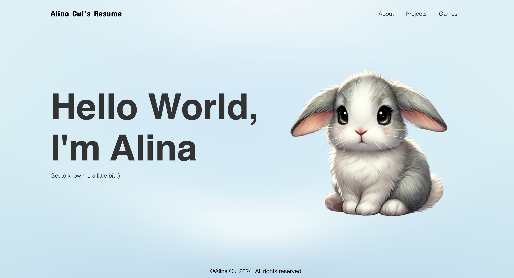

Projects
Below are some Projects which I have been working on.
Below are some Projects which I have been working on.
In this project, I am part of a team of 4-5 students, where we analyse datasets and solve real-world problems. Working closely with IBM, we utilised a comprehensive suite of tools to deliver innovative solutions to their challenge. Through this project, I am gaining hands-on experience and developing new skills in various aspects of machine learning, including:
This project provides a unique opportunity to work with cutting-edge technologies and gain practical experience in the machine learning space, preparing me for a future role in data science.
Developed an automated solution to extract, process, and analyze geospatial data from a RESTful API and export it into a structured CSV format for further analysis. The system efficiently handles large volumes of data and automates the extraction of complex geospatial attributes like polygons and multi-polygons, making it easier for stakeholders to access actionable insights.
For this project I built an interactive Power BI dashboard to track and analyze personal fitness data from a health app, showcasing metrics like steps, calories, and distance for actionable insights.
Overall, this project demonstrated my ability to transform raw data into meaningful insights, leveraging Power BI to create a visually engaging and informative tool for health tracking.
As part of my front-end development projects, I created my personal resume website using HTML, CSS and JavaScript. This project involved:
This project allowed me to apply my front-end development skills in a practical context and provided a platform to present my professional profile effectively.
In this project, I've crafted Python scripts that function like a personalized Pokédex, allowing me to extract and display detailed information from a comprehensive Pokémon database. Each script represents a step closer to Python mastery, enabling precise manipulation and presentation of data as seamlessly as a professional Trainer.
In this project, I've created a Huffman Tree Encoder using Binary trees in C languages:
This project provided hands-on experience with data structures and algorithms
Please contact me to look at the codes©Alina Cui 2024. All rights reserved.